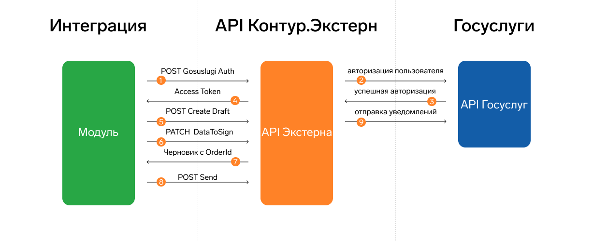

Отправка уведомлений в МВД
С 23 июня 2024 года работодатели должны уведомлять МВД в течение трех рабочих дней о заключении или расторжении договоров с иностранцами, а также при выплате зарплаты высококвалифицированным иностранным специалистам раз в квартал. Приказ МВД РФ от 16.05.2024 N 260.
Через API Контур.Экстерн можно отправить следующие формы уведомлений:
Уведомление о приеме на работу иностранного сотрудника.
Уведомление об увольнении иностранного сотрудника.
Уведомление о выплатах высококвалифицированных специалистов (ВКС).
Что нужно для отправки уведомлений
Руководителю организации нужно создать личный кабинет организации на Госуслугах, чтобы отчитываться в МВД по иностранцам и ВКС. Далее руководитель должен добавить ответственного сотрудника за работу и выдать ему доверенность, а также выбрать систему для документооборота — Контур.МВД.
Сотрудник со свой стороны должен подтвердить добавление себя как сотрудника в личном кабинете организации на Госуслугах. Контролирующий орган присвоит ему личный идентификатор — API-ключ на Госуслугах состоящий из 32 символов. Этот API-ключ нужен для получения токена, чтобы API Контур.Экстерн мог использовать его при работе с уведомлениями.
Настроить организацию и добавить сотрудника можно по инструкции.
Как происходит взаимодействие

Интеграционный модуль должен запросить токен для авторизации на ответственного сотрудника с помощью метода POST Gosuslugi Auth. Он нужен для подготовки черновика, его отправки и получения детализированного результата.
Токен (Access Token) — идентификатор с коротким периодом времени действия для авторизации сотрудника на Госуслугах. API Контур.Экстерн сохраняет токен себе и периодически обновляет его, пока действителен файл подписи.
Файл подписи — это файл в формате PKCS#7 с расширением .p7s, который нужно создать путем подписания API-ключа сотрудника. Может быть сформирован только сертификатом с ИНН организации, на сотрудника которой выдан API-ключ. Для работы с методом авторизации нужно перевести файл в формат base64.
API Госуслуг определяет срок жизни подписи к API-ключу — 18 часов, а потому нужно периодически указывать новый файл подписи в параметрах к методу. В интеграции важно учесть периодичность запросов к методу для авторизации с Госуслугами.
После создания черновика нужно подготовить его для отправки в МВД. Для этого был добавлен метод PATCH DataToSign, который добавляет в черновик идентификатор уведомления — OrderId. Черновик нельзя менять после добавления идентификатора, а случае изменений, повторно отправить запрос на подготовку черновика. Подробнее на странице Алгоритм работы с методами API.
Как работать с результатами приема
После приема уведомления МВД возвращает результат: положительный или отрицательный. Документ urn:document:mvd-notification-epgu-protocol всегда есть для положительного результата и детализированного отрицательного результата.
Положительный результат — уведомление принято. Документ можно получить с любого действующего или истекшего токена среди добавленных сотрудников организации.
Отрицательный результат — уведомление не принято. Результат бывает двух видов:
Детализированный отказ в приеме уведомления. Можно получить с действующего токена сотрудника, который отправил уведомление.
Недетализированный отказ в приеме уведомления. Не содержит в документообороте документа
urn:document:mvd-notification-epgu-protocol.
Для получения детализированного отказа обновите токен сотрудника, который отправил уведомление. После этого отправьте повторный запрос на получение результата обработки уведомления.
Алгоритм работы с методами API
Отправка уведомления
Получите токен: POST Gosuslugi Auth. Укажите в теле запроса:
gosuslugi-uid— API-ключ сотрудника из Госуслуг.base64-signature-content— файл подписи API-ключа в формате base64.Создайте файл с расширением .txt в формате UTF-8 без BOM. Например, api_key.txt
Скопируйте в файл API-ключ сотрудника и сохраните его.
Выполните подписание для создания открепленной подписи в формате PKCS#7 с расширением .p7s. Сертификат для подписания должен включать ИНН организации, на сотрудника которой выдан API-ключ.
Сконвертируйте полученный файл подписи в формат base64 и укажите его в теле запроса. Срок жизни файла подписи после отправки запроса составляет 18 часов.
Создайте черновик: POST Create Draft. При создании черновика в теле запроса обязательно укажите:
в
recipientпараметрmvd-code– укажите код отделения МВД для отправки уведомления в МВД. Список кодов: GET ControlUnits.сведения по сотруднику из справочников МВД: GET Handbooks.
Укажите в уведомлении сведения по сотруднику из справочников МВД: GET Handbooks.
Загрузите в сервис контентов подписанный файл уведомления: POST Upload.
Создайте документ в черновике POST Add Document. В теле запроса передайте идентификатор загруженного контента
content-id.Проверьте черновик перед отправкой: POST Check. Без проверки черновик нельзя отредактировать для отправки в МВД.
Подготовьте черновик для добавления подписи: PATCH DataToSign.
API Контур.Экстерн добавит в черновик идентификатор уведомления —
OrderIdи вернет идентификатор контента для подписанияDecryptedContentId. Черновик нельзя менять после добавленияOrderId, а случае изменений, нужно повторно отправить запрос на подготовку черновика.
Получите контент для подписания GET Download. В запросе укажите идентификатор контента для подписания из предыдущего шага.
Добавьте подпись в черновик уведомления: POST Add Signature.
Запустите последовательность методов, когда черновик будет готов к отправке: POST Check -> POST Prepare -> POST Send.
Укажите флаг deferred = true для отложенного выполнения задач.
Каждый из методов возвращает task-id для отслеживания выполнения задачи.
Проверяйте результат выполнения задачи: GET DraftTask. Запрашивайте результат, пока статус не станет Success.
Получение статуса уведомления
Получите статус уведомления: GET Docflow.
Положительный результат: уведомление принято. Обновите информацию в своей информационной системе.
Отрицательный результат:
Детализированный отказ. Уведомление не принято. Обновите информацию в своей информационной системе и подайте уведомление повторно с учетом исправления причин отказа.
Недетализированный отказ. Уведомление не принято.
Примечание
Как получить детализированный отказ:
Повторно получите действующий токен POST Gosuslugi Auth на сотрудника организации.
Получите повторно статус уведомления: GET Docflow.